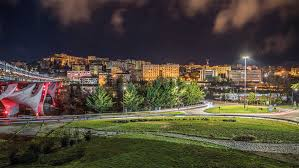

Qui troverete tutto ciò che riguarda il capoluogo della Basilicata
| In questa immagine vediamo il centro storico di Potenza |  |
Potenza è il capoluogo della Basilicata, una regione situata nel Sud Italia. La città sorge a circa 819 metri sul livello del mare, rendendola una delle città più alte d'Italia. Questa posizione le conferisce una vista panoramica sulle montagne circostanti dell'Appennino Lucano.
Descrizione storica: Il territorio di Potenza è stato abitato fin dall'epoca preistorica, come dimostrano i reperti archeologici rinvenuti nella zona. La città stessa è stata fondata dai Lucani, un popolo di origine italica nel IV secolo a.C.
I principali luoghi da visitare a Potenza sono:
-
La cattedrale di San Gerardo
 La cattedrale di San Gerardo è situata nel centro di Potenza ed è uno dei principali luoghi di culto della città. La cattedrale è dedicata a San Gerardo, il patrono di Potenza.
La cattedrale di San Gerardo è situata nel centro di Potenza ed è uno dei principali luoghi di culto della città. La cattedrale è dedicata a San Gerardo, il patrono di Potenza.
-
Il ponte Musmeci
 Il ponte Musmeci è un'icona dell'architettura moderna, progettato dall'ingegner Sergio Musmeci. È considerato uno dei ponti più innovativi d'Italia. Si distingue per le sue forme fluide e organiche.
Il ponte Musmeci è un'icona dell'architettura moderna, progettato dall'ingegner Sergio Musmeci. È considerato uno dei ponti più innovativi d'Italia. Si distingue per le sue forme fluide e organiche.
-
La Villa Romana di Malvaccaro
 Questa struttura presenta i resti di una villa romana con splendidi mosaici pavimentali. È una testimonianza importante della presenza romana in Basilicata.
Questa struttura presenta i resti di una villa romana con splendidi mosaici pavimentali. È una testimonianza importante della presenza romana in Basilicata.
-
La Torre Guevara
 È situata nei pressi della villa comunale, ed è l'unica parte superstite del castello Normanno-svevo. La torre offre una vista sulla città ed è utilizzata per eventi culturali e mostre.
È situata nei pressi della villa comunale, ed è l'unica parte superstite del castello Normanno-svevo. La torre offre una vista sulla città ed è utilizzata per eventi culturali e mostre.
-
La villa comunale di Santa Maria
 E' un parco pubblico situato in posizione panoramica , ideale per rilassarsi e godere di una passeggiata tra gli alberi.
La villa comunale offre una vista spettacolare della città e delle montagne circostanti
E' un parco pubblico situato in posizione panoramica , ideale per rilassarsi e godere di una passeggiata tra gli alberi.
La villa comunale offre una vista spettacolare della città e delle montagne circostanti
La cucina tipica di potenza :
-
Le orecchiette con le cime di rapa:
 Uno dei piatti piu iconici della Basilicata.Le orecchiette una pasta fresca a froma di piccole orecchie , sono abbinate a cime di rapa (broccoli) e conditi con aglio,
olio d'oliva e peperoncino.Questo piatto è un perfetto esempio della cucina povera , ma ricca di sapore
Uno dei piatti piu iconici della Basilicata.Le orecchiette una pasta fresca a froma di piccole orecchie , sono abbinate a cime di rapa (broccoli) e conditi con aglio,
olio d'oliva e peperoncino.Questo piatto è un perfetto esempio della cucina povera , ma ricca di sapore
-
I peperoni Cruschi :
 Questi peperoni dolci, essiccati e fritti, sono un antipasto molto popolare. Serviti croccanti,
possono essere utilizzati anche come condimento per altri piatti aggiungendo un tocco di sapore affumicato e dolce.
Questi peperoni dolci, essiccati e fritti, sono un antipasto molto popolare. Serviti croccanti,
possono essere utilizzati anche come condimento per altri piatti aggiungendo un tocco di sapore affumicato e dolce.
-
Gli Strascinati :
 Gli strascinati sono una pasta fresca tipica della Basilicata, in particolare di Potenza. Hanno una forma simile alle orecchiette, ma sono più larghi e schiacciati.
Preparati con farina di semola e acqua, vengono spesso conditi con sughi di carne, pomodoro fresco o verdure come le cime di rapa. La loro preparazione è tradizionale e rappresenta un legame profondo con la cultura culinaria lucana, rendendoli un piatto simbolico della cucina locale.
Gli strascinati sono una pasta fresca tipica della Basilicata, in particolare di Potenza. Hanno una forma simile alle orecchiette, ma sono più larghi e schiacciati.
Preparati con farina di semola e acqua, vengono spesso conditi con sughi di carne, pomodoro fresco o verdure come le cime di rapa. La loro preparazione è tradizionale e rappresenta un legame profondo con la cultura culinaria lucana, rendendoli un piatto simbolico della cucina locale.
-
Pasta e fagioli :
 La pasta e fagioli è un piatto tradizionale italiano, particolarmente popolare in Basilicata. Si tratta di una zuppa densa preparata con pasta ,spesso tubetti o ditalini e fagioli borlotti, arricchita con pomodoro, aglio e olio d'oliva.
La pasta e fagioli è un piatto tradizionale italiano, particolarmente popolare in Basilicata. Si tratta di una zuppa densa preparata con pasta ,spesso tubetti o ditalini e fagioli borlotti, arricchita con pomodoro, aglio e olio d'oliva.
Il potenza calcio :  Il Potenza Calcio è una storica squadra di calcio con sede a Potenza, fondata nel 1919. I colori sociali del club sono il rosso e il blu. La squadra gioca le sue partite casalinghe allo Stadio Viviani, un impianto con una capacità di circa 8.000 spettatori, noto per l'atmosfera vivace che i tifosi creano durante le gare.
Negli anni, il Potenza ha attraversato diverse categorie del calcio italiano, dalla Serie A fino alla Serie C. La squadra ha una lunga tradizione e ha vissuto momenti di grande successo, inclusi campionati vinti e promozioni. La rivalità più sentita è con il Matera, con cui disputa il "derby lucano", un evento molto atteso dai tifosi di entrambe le città.
Oltre alla prima squadra, il Potenza Calcio è attivo anche nel settore giovanile, contribuendo allo sviluppo di talenti locali e creando un legame profondo con la comunità. I sostenitori del Potenza, noti per la loro passione, seguono la squadra con grande entusiasmo, rendendo ogni partita un evento speciale.
Il Potenza Calcio è una storica squadra di calcio con sede a Potenza, fondata nel 1919. I colori sociali del club sono il rosso e il blu. La squadra gioca le sue partite casalinghe allo Stadio Viviani, un impianto con una capacità di circa 8.000 spettatori, noto per l'atmosfera vivace che i tifosi creano durante le gare.
Negli anni, il Potenza ha attraversato diverse categorie del calcio italiano, dalla Serie A fino alla Serie C. La squadra ha una lunga tradizione e ha vissuto momenti di grande successo, inclusi campionati vinti e promozioni. La rivalità più sentita è con il Matera, con cui disputa il "derby lucano", un evento molto atteso dai tifosi di entrambe le città.
Oltre alla prima squadra, il Potenza Calcio è attivo anche nel settore giovanile, contribuendo allo sviluppo di talenti locali e creando un legame profondo con la comunità. I sostenitori del Potenza, noti per la loro passione, seguono la squadra con grande entusiasmo, rendendo ogni partita un evento speciale.
Trofei vinti dal potenza calcio :
- Serie C: Campione: 1971-72 Campione: 1992-93
- Coppa Italia Serie C: Vincitore: 1993-94
- Serie D : Campione: 1964-65 Campione: 1978-79 Campione: 1991-92
- Coppa Italia Dilettanti: Vincitore: 1991-92
- Torneo di Viareggio: Vincitore: 1971
- I tifosi del Potenza sono noti per il loro calore e la loro lealtà. Gli rossoblu si riuniscono allo Stadio Viviani per sostenere la squadra, creando un'atmosfera unica. La tifoseria è organizzata in gruppi che animano le partite con cori e striscioni, rendendo ogni incontro un'esperienza memorabile.
- La rivalità principale del Potenza è con il Matera, con cui disputa il "derby lucano". Queste partite sono cariche di emozione e rappresentano uno dei momenti più attesi della stagione. La competizione tra le due squadre è sempre accesa e coinvolge profondamente i tifosi.
Natura e paesaggi : 
-
Lago di Monticchio:
 Il Lago di Monticchio è un suggestivo specchio d'acqua situato nell'Appennino Lucano, composto da due laghi: Monticchio Laghetto e Monticchio Grande. Circondato da boschi, offre panorami spettacolari e un ambiente naturale ideale per passeggiate, trekking e pic-nic.
È rinomato per la sua flora e fauna, rendendolo un luogo perfetto per gli amanti della natura. Nelle vicinanze si trovano antichi eremi e monasteri, insieme a ristoranti che servono piatti tipici della tradizione lucana. Un'ottima meta per una gita di un giorno!
Il Lago di Monticchio è un suggestivo specchio d'acqua situato nell'Appennino Lucano, composto da due laghi: Monticchio Laghetto e Monticchio Grande. Circondato da boschi, offre panorami spettacolari e un ambiente naturale ideale per passeggiate, trekking e pic-nic.
È rinomato per la sua flora e fauna, rendendolo un luogo perfetto per gli amanti della natura. Nelle vicinanze si trovano antichi eremi e monasteri, insieme a ristoranti che servono piatti tipici della tradizione lucana. Un'ottima meta per una gita di un giorno!
-
Fiume basento:
 Il Fiume Basento, lungo circa 90 chilometri, nasce nell'Appennino Lucano e scorre attraverso paesaggi mozzafiato. Caratterizzato da un flusso tranquillo, è circondato da una ricca biodiversità, con vegetazione mediterranea e fauna variegata.
È un luogo ideale per attività all'aperto come trekking, pesca e kayak. Lungo il suo corso si possono scoprire anche borghi storici e siti archeologici, rendendolo una meta affascinante per gli amanti della natura e della cultura.
Il Fiume Basento, lungo circa 90 chilometri, nasce nell'Appennino Lucano e scorre attraverso paesaggi mozzafiato. Caratterizzato da un flusso tranquillo, è circondato da una ricca biodiversità, con vegetazione mediterranea e fauna variegata.
È un luogo ideale per attività all'aperto come trekking, pesca e kayak. Lungo il suo corso si possono scoprire anche borghi storici e siti archeologici, rendendolo una meta affascinante per gli amanti della natura e della cultura.
Il Lago di Monticchio è un suggestivo specchio d'acqua situato nell'Appennino Lucano, composto da due laghi: Monticchio Laghetto e Monticchio Grande. Circondato da boschi, offre panorami spettacolari e un ambiente naturale ideale per passeggiate, trekking e pic-nic.
È rinomato per la sua flora e fauna, rendendolo un luogo perfetto per gli amanti della natura. Nelle vicinanze si trovano antichi eremi e monasteri, insieme a ristoranti che servono piatti tipici della tradizione lucana. Un'ottima meta per una gita di un giorno!
Il Fiume Basento, lungo circa 90 chilometri, nasce nell'Appennino Lucano e scorre attraverso paesaggi mozzafiato. Caratterizzato da un flusso tranquillo, è circondato da una ricca biodiversità, con vegetazione mediterranea e fauna variegata.
È un luogo ideale per attività all'aperto come trekking, pesca e kayak. Lungo il suo corso si possono scoprire anche borghi storici e siti archeologici, rendendolo una meta affascinante per gli amanti della natura e della cultura.